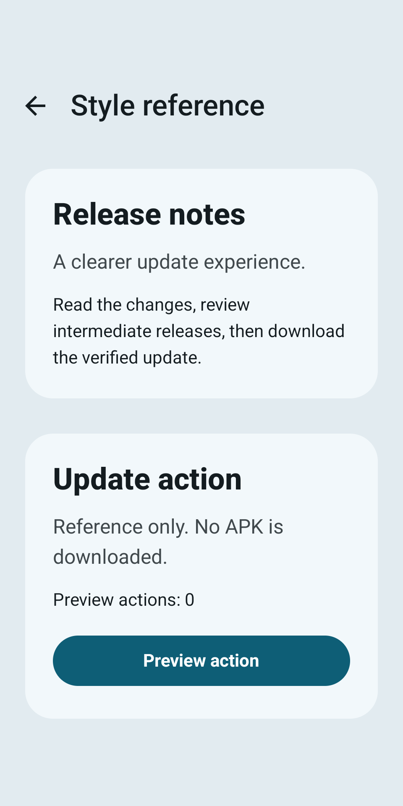
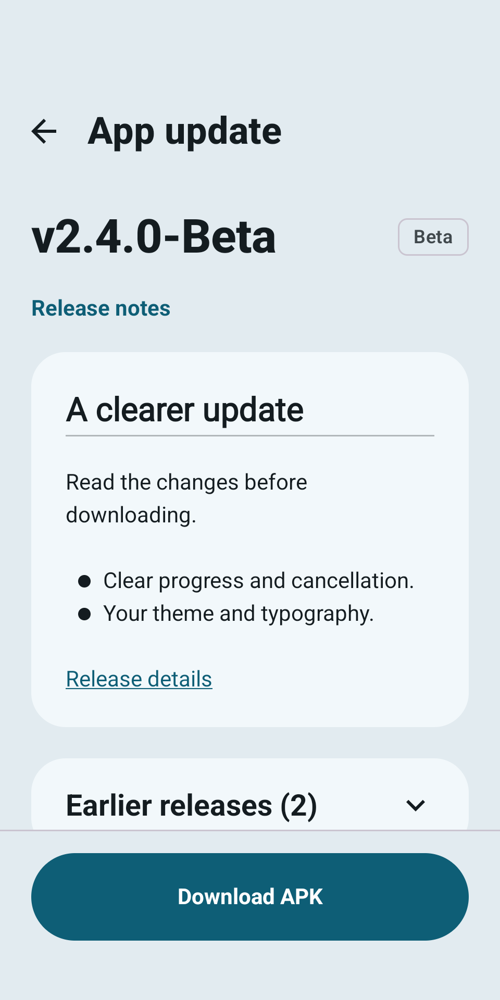
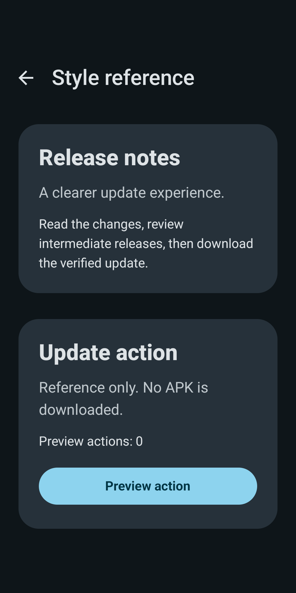
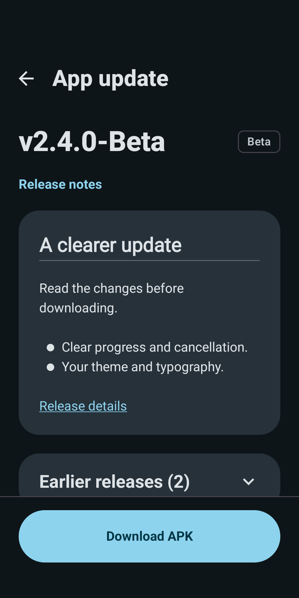
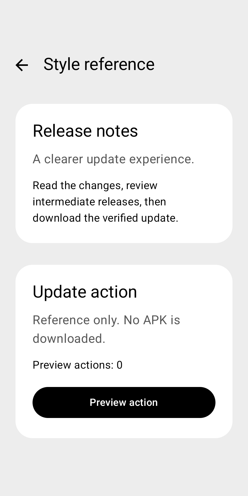
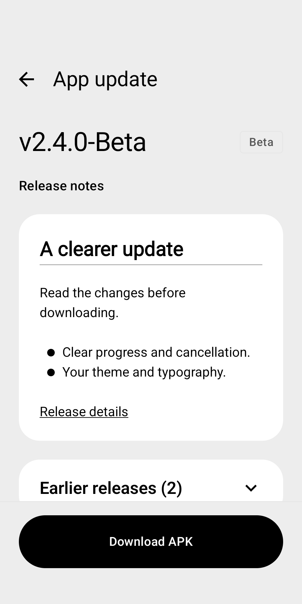
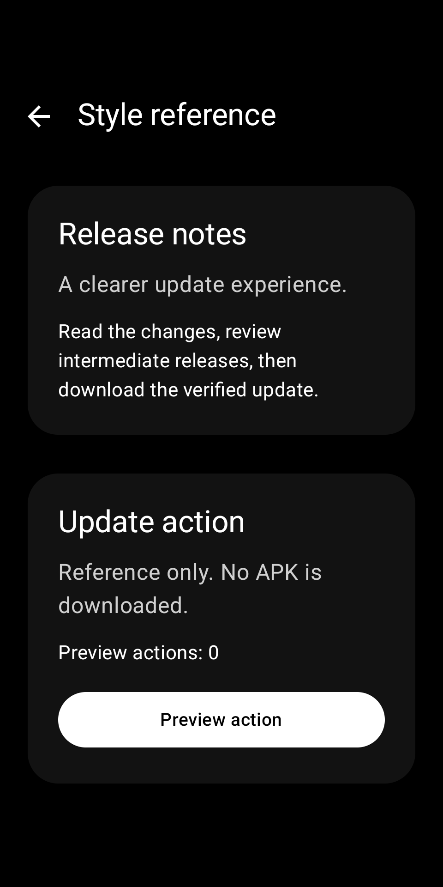
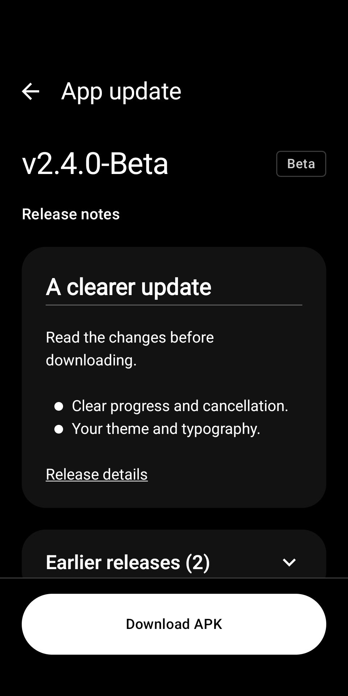
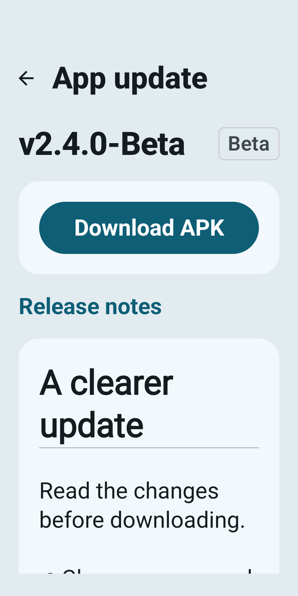
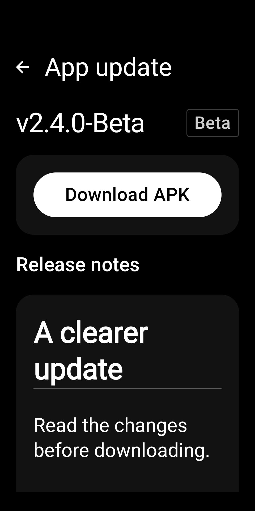

2026-10-23 · API36 · 320×640dp · fontScale 1.0
左は取得済み公開Pyriteの実コンポーネント、右は同じPyriteTheme上のEliefです。内容と操作位置は異なります。画像の全画素一致を目的とした比較ではありません。各画像を押すと元画像を開けます。










1000dp幅 · Dynamic Light · Dynamic Dark · Error · 色とコントラストの測定 · R8の全画面・Darkシステムバー（AVD本来の画面サイズ）